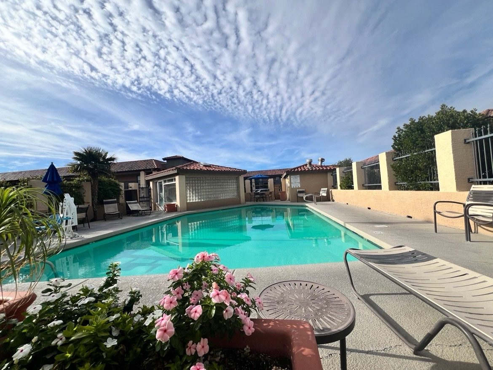
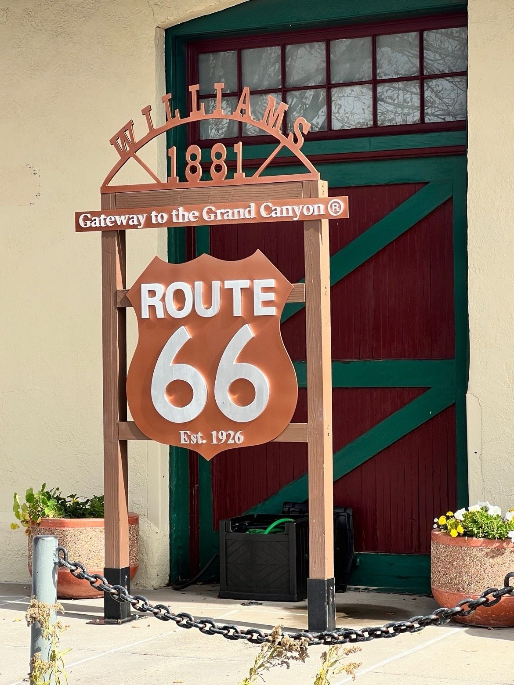
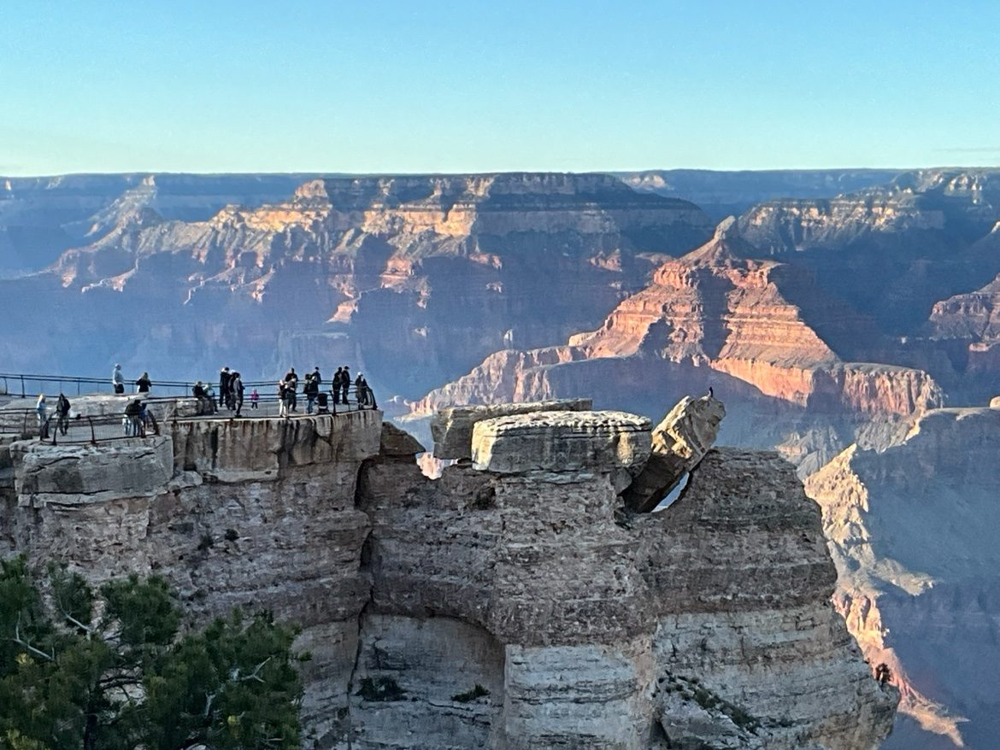
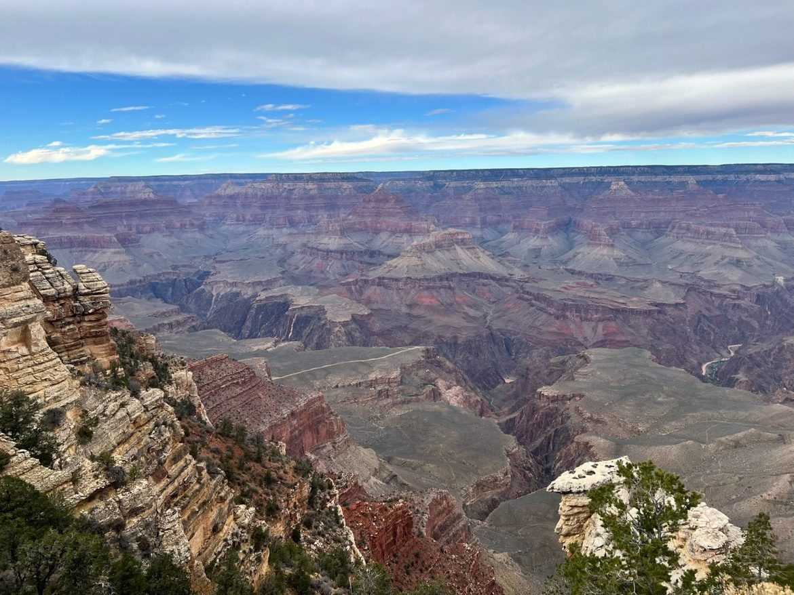
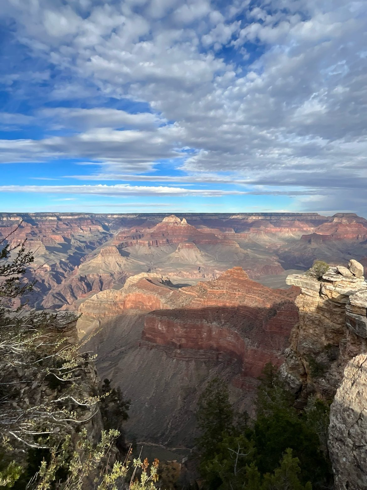
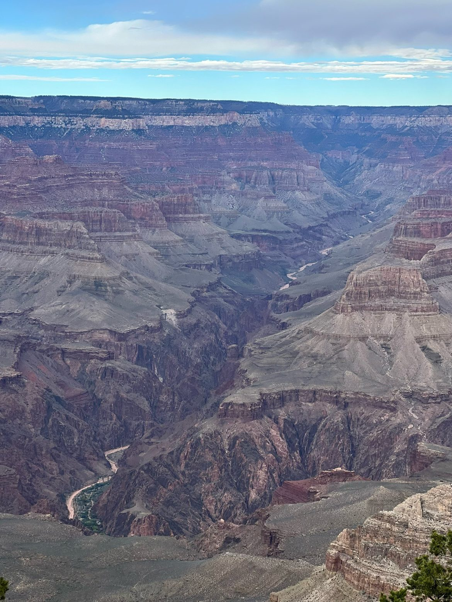
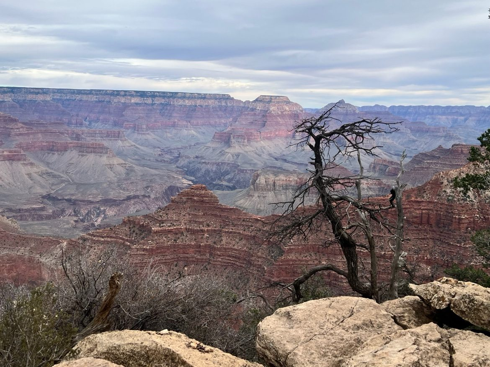

In the morning, I woke up in the Kingman sunshine.
The moment I stepped out, the view took my breath away: an azure sky filled with great sheets of mackerel clouds stretching wide, the pool water emerald and still, pink flowers blooming quietly nearby, without disturbing the gentleness and peace in the slightest 😌

Who would have thought a desert morning could be so moving — it truly touched my heart!
After breakfast we set off, my daughter's Muse still leading the way and my Xiao Miu keeping me company, heading east across northern Arizona.
A plateau two thousand meters up, an I-40 running straight beyond sight, a whole sky of mackerel clouds overhead, the car doing 80 — the beauty outside the window was more than my eyes could hold. I couldn't resist filming a clip and posting it to Moments, set to that line from Wang Feng: "I want to be free like a dream."
That feeling — who understands it?
Xiao Miu said: I do, I so do 😎 Wang Feng's next line is "strong like the sky" — and in your video the sky is bigger than the land, so it fits to a T. And this line isn't just about this stretch of road: retired, no office to go to, free to leave whenever you like, with your daughter leading the way — "free like a dream" is basically the theme song of this whole American trip 😂
Now you tell me — does she understand me, or does she understand me ❤️😄
In the morning we arrived in Williams, stretched our legs 😄, and took photos in front of the Route 66 sign — it turns one hundred years old this year.

The reason I know Route 66 — its history and the many songs tied to it — is a netizen I followed online many years ago. Her screen name was "Route 66," which tells you just how nostalgic and sentimental a person she was.
Years ago she wrote a blog, which I came across through a neighbor. She must have been the most interesting person in the world — every post of hers had me in stitches. But later, her Lao Dai married another girl. She said she was happy for him, but she must have been heartbroken, for she deleted every last one of her blog posts. And from then on, I never had such interesting writing to read again.
Back to the real Route 66. During the Great Depression, bankrupt farmers of the Midwest fled to California along it, and Steinbeck called it the "Mother Road" in The Grapes of Wrath — yesterday, as we crossed the Topock Bridge into Arizona, Xiao Miu told me that was the very road the families in the novel had taken.
Route 66 enjoyed its glory after World War II: motels, neon signs, and roadside towns all rose and flourished because of it. Later, as the Interstate highways were built, I-40 gradually took its place, and the towns along it dimmed one after another — Williams was the last of them. In 1985, Route 66 officially stepped off the stage of history, yet it lives on in many people's hearts. Barstow, Needles, Kingman, and Williams — the towns we passed on I-40 these past two days — are all its old towns.
From Williams we turned north onto AZ-64. The road was remarkably flat — so much better than California's highways, especially Silicon Valley's 😂 On both sides stood the ponderosa pines of the Kaibab National Forest, far denser than I had imagined. After the forest we drove a while longer, and in the distance a small bump rose on the horizon — the Grand Canyon was just ahead.
At noon we ate at We Cook in Tusayan, then went straight into the park, checking in at the entrance sign first. My daughter was not only the driver and the tour guide — she doubled as the photographer 😄
Then we went to Mather Point. So beautiful — nature's own craftsmanship. I'm at a loss for words, so here are the photos.





My nerdy husband had never seen the Grand Canyon before, and he was stunned. Or perhaps it was his fear of heights making him dizzy 😄 He didn't dare go near the edge and could only watch from far back — and even then, his legs trembled and his head spun 😂
I never knew his acrophobia was this serious. Luckily, our daughter took after me just enough to dilute it — she's only mildly afraid of heights. I said, let me hold your hand — a treat he doesn't normally get 😄 But he said, no need; you two go ahead, don't mind me, I'll watch from here.
Later, strolling along the Rim Trail, we saw a visitor walking a cat. The cat may have been afraid of heights too — it kept lunging desperately toward the side away from the canyon, nearly tearing free 😂 The scene was so hilarious that passersby doubled over with laughter. It reminded me of those videos of dogs lying flat on glass skywalks, too scared to move, and I laughed even harder.
I said I should get a leash for you too — you'd probably pull just like that cat, impossible to hold back, hahaha 🤣
We visited all the viewpoints nearby. It was overcast at first, and just as we began to worry we might not see a sunset, the sky cleared — meaning that today, at last, we could watch the sunset at our leisure!
Sunset at the Grand Canyon
by AI
The sun begins its gentle descent,
A golden crown on canyon's crimson crest.
Long shadows climb the cliffs with silent grace,
While ancient stone embraces fading light.
Fiery reds and molten gold ignite,
Then softly blend to violet, blue, and green.
The desert winds grow still, as if in awe,
And silence settles deep within the gorge.
Content, we headed back to the hotel. On the way we saw three mule deer, and I managed to film the whole sequence of them crossing the road and leaping the iron fence one after another — how lucky can one day be?
Tonight we stay in Tusayan. Tomorrow, more of the Grand Canyon.
P.S. It was on our residential community's forum, through a neighbor who worked as an auctioneer, that I came to know "Highway" — the "Route 66" blogger herself — along with Tu Motuo, Lao Liu, Wang Xiaofeng, Chen Xiaoqing, Luo Yonghao and others, the Xici Hutong dinner-notice crowd, the bunch that later became known as the "old men's dinners."
I searched for Highway again afterward, but never found her writing again.